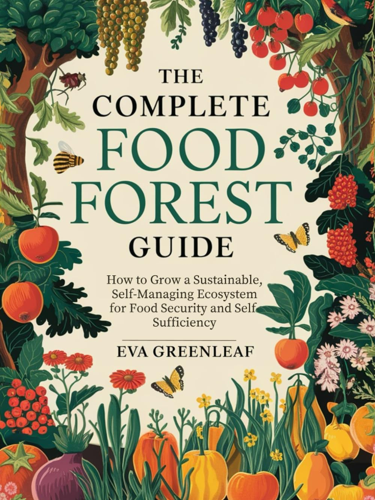

Space planning
Work out what fits your home, routine, and maintenance capacity before you start planting.
Free starter guide for beginner home growers
Get the free Home Food System Starter Guide and learn how to plan your space, choose the right first crops, and start building a productive, low-maintenance setup at home.
Grow Food System
Plan your space. Choose what to grow first. Avoid common early mistakes.
Backed by real-world practice
Rooted in a real-world approach to growing more of your own food at home — without overcomplicating it or trying to do too much at once.
The focus is where it matters most for newcomers: better early decisions, the right starting point, and a setup that can grow with you over time.
Drawn from the principles behind The Complete Food Forest Guide.

The same practical thinking: start with what fits, build confidence, and expand when ready.

What's inside the guide
Clear, practical guidance on the decisions that shape your first months of growing at home.
Work out what fits your home, routine, and maintenance capacity before you start planting.
Focus on what is actually useful and manageable — not what looks good in someone else's garden.
Avoid the choices that waste time, effort, money, and early momentum.
See how a simple setup can grow into a fuller home food system at a steady, manageable pace.
Simple system
A simple framework to help you decide what to do first, what to grow, and when to expand.
Start with your real space, time, and maintenance capacity.
Choose the first crops most likely to be useful and manageable.
Build around food you will actually value and use at home.
Add more only when the basics are working and confidence is growing.
Different starting points
The right first step depends on your space, your time, and what you can realistically maintain.
Start with a manageable setup that fits tight space, light time, and quick learning cycles.
Create a productive home setup with room to improve steadily without overbuilding early.
Use the same considered approach before adding more complexity, volume, or maintenance.
Why people get stuck
Free starter guide
You'll get a practical guide you can act on straight away, plus follow-up emails with clear next steps and useful advice.
Free. No commitment. Delivered by email.
Free guide delivery
Common questions
Yes. It is designed for beginners who want a clear, practical way to start without feeling overwhelmed.
Yes. The guide helps you plan around the space you actually have, whether that is compact or more open.
No. The point is to begin where you are now, with a setup that fits your home and your current capacity.
You will receive the free starter guide by email, along with useful follow-up emails with practical tips and next steps. You can unsubscribe at any time.
Start simply
The Home Food System Starter Guide gives newcomers a solid first step, a clear framework, and a smarter way to develop something useful at home over time.
Get the Free Starter Guide